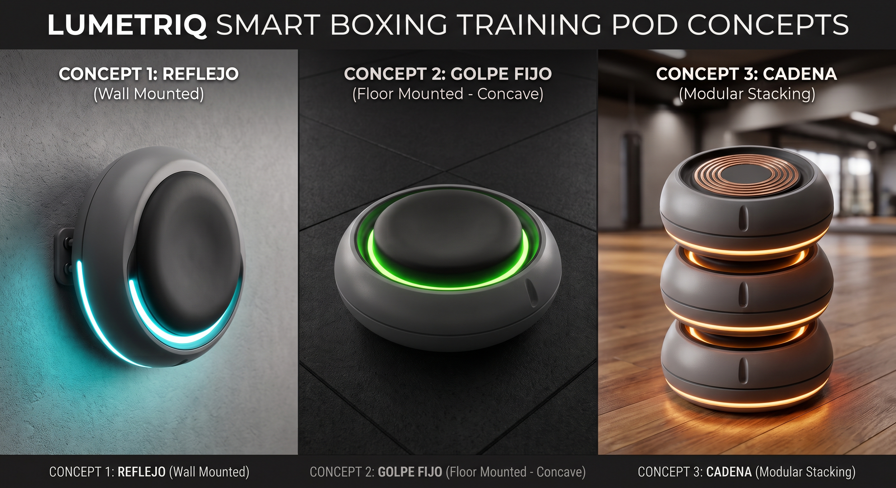

Assignment 6: Design Concept Generation & Selection
In this phase we moved from what problem we solve to how Lumetriq looks, is handled, and is used. Using generative AI (Claude and Imagen 3), we built a morphological chart, looked for technology analogies, generated three concepts, evaluated them with a Pugh matrix, and left the selected concept ready for CAD in Week 7.
1. Morphological Chart
Prompt 1: Exploring Alternatives by Parameter
Tool: Claude, acting as an industrial designer specialized in connected hardware for Latin America. Every variant had to be manufacturable with a 3D printer, basic CNC, and components available in Mexico.
Input constraints: resistance to sweat, vibration, and environments crowded with 2.4 GHz signals; installation in a few steps (take it out of the case, place it, turn it on, sync with the app, and train); maximum dimensions of 14 × 14 cm. We asked for 7 parameters with 3 variants each, plus the most important manufacturing implication of each. In a second iteration, shape A was changed to include a semi-curved back face for heavy bags, and material variant B was changed to evaluate die-cast aluminum.
| Parameter | Variant A | Variant B | Variant C |
|---|---|---|---|
| Housing shape | Body with a semi-curved back face for heavy bags and a removable flat base (3D printed in two parts) | Rounded-edge hexagon that tiles into a mosaic (3D printing) | Hemispherical dome on a wide, tip-resistant base (3D printing with variable infill) |
| Installation / mounting | Free-standing on a non-slip rubber mat (laser or die cut) | Industrial Velcro patch with an adhesive counterpart on the floor or wall (bent sheet) | Perimeter silicone suction-cup ring (silicone mold or commercial O-ring) |
| Status indicator without the app | Perimeter LED ring with a color code (translucent printed diffuser) | Window with 3–5 discrete traffic-light LEDs (simple machining or printed insert) | The same stimulus LEDs show status with special patterns (firmware only) |
| Material and finish | Printed PETG or ABS; ABS smoothed with acetone vapor (3D printing + post-processing) | Die-cast aluminum, anodized or powder coated (external contract manufacturing) | CNC-machined polycarbonate cover over a printed base (CNC + 3D printing) |
| Physical interface | Capacitive touch surface under a translucent cover (commercial capacitive PCB) | Silicone membrane over a dome switch (silicone mold + metal dome) | Rigid surface with a piezoelectric or force sensor underneath (sensor bonded internally) |
| Power source | Internal battery charged through pogo pins (soldered pogo pins) | Battery with USB-C protected by a silicone cap (molded or purchased cap) | Qi inductive charging in the case (commercial Qi module) |
| Environmental resistance and sealing | O-ring between cover and base with screws, basic IP54 (purchased O-ring) | Glued monoblock housing with no exposed screws (structural bonding) | Double housing with resin-encapsulated electronics (epoxy potting) |
Reflection Pause: Checking the Chart Against the PDS
The chart was generated before the Week 5 architecture was closed, so we checked it against the PDS and the current decisions. Several variants are manufacturable, but they do not work in a product that takes boxing punches.
| Variant | Issue Found | Decision |
|---|---|---|
| Interface A: capacitive | A boxing glove (leather or synthetic over foam) insulates the hand, so capacitive detection through the glove is unreliable [Strong hypothesis: test with a real glove]. It also does not measure acceleration or force. | 🔴 Discarded |
| Interface B: dome switch | It is binary (it does not measure intensity), and its fatigue life will not withstand 10,000 impacts of ≈ 1,600–2,600 N (FR-06). | 🔴 Discarded |
| Interface C: sensor under a rigid surface | This is the right foundation. With the v2 component list it evolves into an ADXL375 + 4 load cells under a floating plate, which measures force regardless of how the pod is mounted. | 🟢 Kept and improved |
| Power C: Qi | It does not chain pods or allow charging by stacking, and it is less efficient (PDS contradiction C3). | 🔴 Discarded |
| Power A + B | They are not mutually exclusive: the PDS calls for stacking (pogo), and the critical review kept USB-C as the baseline route. | 🟢 Combined |
| Indicator A + C | Using the same stimulus ring to show status eliminates parts; the LED window (B) duplicates hardware. | 🟢 A and C combined |
| Material B: die-cast aluminum | The mold exceeds both budget and schedule, and a metal housing blocks 2.4 GHz (Week 5, section D.9c). | 🟡 Volume production only; aluminum only for the internal plate |
| Material C: polycarbonate on the striking face | A hard surface right where the knuckles land. | 🔴 Discarded for the striking face; useful as a diffuser |
| Sealing B and C | They prevent replacing the battery and PCB in under 5 minutes (NFR-06), and potting a lithium cell in resin makes heat dissipation harder. | 🔴 Discarded; the O-ring (A) stays |
| Mounting C: suction cup | It comes loose under lateral punches and on dusty or sweaty floors. | 🔴 Discarded |
| Shape B: hexagon | It requires a specific orientation when stacking; the concentric contact rings were chosen precisely so that rotation would not matter. | 🔴 Discarded |
| Missing option | The chart does not include rigid wall mounting, the most realistic position for boxing (face and torso height). | 🟢 Added as variant D |
| Budget of $500–600 MXN per unit | Not realistic for an instrumented pod: the v2 list comes to ≈ $1,380–1,830. Only a "reaction-only" version (no accelerometer or load cells) comes close. | 🟡 Contradiction flagged; the target remains $1,500 per prototype |
2. Technology Analogies
Prompt 2: Solutions from Other Industries for the Weakest Parameters
After the review, the weakest parameters were mounting, force measurement, contact protection, and user confirmation. For each one, we looked for a product from another industry that had already solved an equivalent problem.
| Weak Parameter | Analogy | What It Solves There | What Transfers to Lumetriq |
|---|---|---|---|
| Rigid, removable mounting | Camera lens bayonet and ceiling light fixture mount | A heavy part locks in with a quarter turn, in a single orientation, without tools | A fixed plate on the wall and a pod that mounts and dismounts with a quarter turn and a lock |
| Force measurement regardless of location | Bathroom scale and laboratory force plate | Load cells under a plate measure the transmitted load, not acceleration | 4 × 50 kg load cells under a floating plate with stops (v2 list) |
| A surface that takes punches and senses them | Electronic drum pad and drumhead with a tension hoop | A membrane tensioned by a hoop over a rigid plate with a sensor; it withstands millions of hits, measures intensity, and the head is replaceable | Faux leather tensioned with a ring over EVA and an aluminum plate; the sensor never takes the direct hit and the cover is replaceable |
| Guiding the punch to the center | Trainer's focus mitt | Faux leather over foam with a concave face: it "catches" the fist and shows where to hit | A concave pad (≈ 4 mm sag) with the same materials; the concavity comes from an EVA ring under the faux leather |
| Exposed charging contacts | Magnetic smartwatch and laptop chargers | A small connector that magnets align and hold in place | A magnetic pogo connector recessed at the 6 o'clock position, on the front and back faces |
| User confirmation | The Simon game, traffic lights, and car turn signals | Color, pattern, and position communicate status and direction without a screen | Three confirmation levels using the same LED arc (see "Selected Concept") |
3. Three Concepts
Prompt 3: Complete Concepts (Object, App, and Landing Page)
The three concepts differ in at least 3 parameters (shape, mounting, indicator, and power). All of them share the Week 5 electronic architecture (ESP32, BLE + ESP-NOW gateway, WS2812B ring, 18650 cell, React Native app), so the comparison is about design, not electronics.
| Aspect | 1. Reflex | 2. Fixed Strike | 3. Chain |
|---|---|---|---|
| One-sentence idea | A luminous target on the wall, at the opponent's height | A rugged floor pod with a concave center that "catches" the punch | Modules that stack, charge as a tower, and light up in sequence |
| Morphological combination | Shape C (biomorphic dome) · Mounting D (wall, quick anchor) · Indicator A+C · Interface C · Power B | Modified shape A (disc with a recessed pad) · Mounting A (free-standing on the floor) · Indicator A+C · Interface C · Power A+B | Stackable cylinder · Mounting A · Indicator A+C · Interface C · Power A (copper rings) |
| Installation | Screw a bracket to the wall and snap the pod in | Take it out of the case and place it on the floor | Unstack the charging tower and distribute the pods |
| Daily use | Shadowboxing and combinations at face and torso height | Footwork agility, kicks, and reaction drills on the floor | Reaction circuits; when finished, the pods stack to charge |
| Technology analogy | Reactive shooting targets and action camera mounts | E-drum pad and arcade machine button | Charging tower for portable radios and smartwatch pogo pins |
| Main manufacturing implication | The "seamless" rubber-to-plastic junction requires overmolding or bi-material; separate metal bracket | Simple: printed TPU pad + PETG housing | Copper contacts (ENIG PCB) and tight stacking tolerances |
| App | "Combinations" mode: each light is a punch (jab, cross, hook) | "Agility" mode and a "first to touch wins" competition | "Sequence" mode: the lights run from pod to pod |
| Landing page | "Train your reflexes at your opponent's height" | "No installation: put it on the floor and train" | "Charges as a tower, no cables" |
| Strength | Highest realism and appeal; the light sits right in front of the eyes | Protects the electronics and centers the punch | Directly meets the PDS stacking requirement |
| Weakness | A dome cannot be stacked; the convex surface deflects punches; an action-camera mount will not survive a boxing punch | On the floor, a boxer cannot punch with proper technique | Exposed contacts on the striking face; it is more a storage concept than a training concept |
4. AI Renders
Prompt 4: Quick Visualization with Imagen 3
Method: Claude, acting as an art director, translated each concept into an English prompt with concrete materials (matte rubber vs. glossy plastic), precise spatial relationships, and mechanical terms. The prompts were run in Imagen 3 (Gemini), and we iterated on the results: concept 2 was renamed Fixed Strike, and the green halo on the floor was removed so the light is only visible inside the pad's recess.

Triptych generated with Imagen 3: Reflex (wall), Fixed Strike (floor, concave center), and Chain (modular stacking).
Concept 1 Prompt (Reflex)
Renders as a Quick Filter Before Pugh
| Criterion | What It Communicates Well | What the Render Invents or Exaggerates |
|---|---|---|
| Mounting affordance | Reflex makes it clear that it goes on the wall; Chain, that the modules stack | Reflex's mount is small and off to the side: it would not survive a ≈ 2,500 N frontal punch |
| Material transition | Fixed Strike clearly separates the impact skin (matte) from the hard housing | Reflex's "seamless" junction cannot be made with FDM or in a single process |
| Component feasibility | The LED rings and side notches look manufacturable | Chain's copper rings are exposed on the striking face, contradicting the recessed-contacts decision |
| Scale | Fixed Strike and Chain are consistent with Ø 130 × 70 mm | Reflex's dome looks deeper than the allowed 80 mm (NFR-01) |
The render is useful for communicating and detecting aesthetic intent, but it does not validate engineering: the AI naturally draws solutions that cannot be manufactured or that would not hold the load. That is why the selection was made with the matrix and not with the most attractive image.
5. Pugh Matrix
Prompt 5: Selection with Weighted Criteria
Rules: concept 3 (Chain) is the datum (all of its cells are S). Each concept is rated against it: + better, – worse, S same. Ten criteria with weights that add up to 100: 4 for desirability (40%) and 6 for feasibility/viability (60%). Score = Σ weights of the + − Σ weights of the −. The last column rates, with the same rules, the combined concept proposed in the next section.
| Criterion | Weight | 1. Reflex | 2. Fixed Strike | 3. Chain (datum) | Reflex + Fixed Strike |
|---|---|---|---|---|---|
| Desirability (40) | |||||
| D1. Striking at a realistic height (face and torso) | 12 | + | – | S | + |
| D2. Stimulus visibility at 2–3 m | 10 | + | S | S | + |
| D3. Punch safety and comfort | 10 | + | S | S | + |
| D4. Tool-free installation and transport | 8 | – | + | S | S |
| Feasibility and Viability (60) | |||||
| T1. Repeatable, mounting-independent measurement | 14 | – | + | S | + |
| T2. Protection of electronics and contacts | 12 | S | + | S | + |
| T3. Charging by stacking (PDS requirement) | 10 | – | S | S | S |
| T4. Manufacturable with 3D printing and lab tools | 10 | – | S | S | S |
| T5. Cost ≤ $1,500 MXN per prototype | 8 | – | S | S | – |
| T6. Schedule risk (8 weeks) | 6 | S | S | S | – |
| Σ + / Σ – / Σ S | — | 3 / 5 / 2 | 3 / 1 / 6 | 0 / 0 / 10 | 5 / 2 / 3 |
| Weighted desirability | 40 | +24 | –4 | 0 | +32 |
| Weighted feasibility | 60 | –42 | +26 | 0 | +12 |
| Total score | 100 | –18 | +22 | 0 | +44 |
| Rank | — | 4 | 2 | 3 | 1 |
Rating Rationale
- Reflex, D1–D3 (+): striking at face height reproduces the real technical motion and puts the stimulus in front of the eyes; the soft shape has no sharp edges.
- Reflex, D4 (–): it requires screwing a bracket to the wall.
- Reflex, T1 (–): the convex surface deflects punches that do not land on center, and on the wall the "force" estimated with F = m·a changes compared to the floor (contradiction C2).
- Reflex, T3–T5 (–): a dome cannot be stacked; the seamless junction cannot be printed; the anchor requires an extra metal part.
- Fixed Strike, D1 (–): on the floor it only allows kicks or forced downward punches; for boxing, this is its biggest flaw.
- Fixed Strike, T1–T2 (+): the concave center guides the fist to the center of the sensor (better repeatability), and the rigid rim protects the interior.
- Combined, T5–T6 (–): the wall plate, the load cells, and three mounting modes cost more and add work; that is its real cost.
Analysis
- Reflex wins on desirability (+24) and loses on feasibility (–42). It is the most attractive concept, but as drawn it cannot be built properly.
- Fixed Strike wins on feasibility (+26) and loses on desirability (–4). It has the best engineering, in the wrong position for boxing.
- As the methodology requires, the winner (Fixed Strike) is a starting point, not a final decision. Its strengths and those of Reflex are complementary, so the two are combined.
- Robustness: the combined concept beats the datum on both desirability (+32) and feasibility (+12). Fixed Strike would only beat it if feasibility weighed more than ≈ 80% of the total.
6. Selected Concept
Fixed Reflex: Reflex with the Structure of Fixed Strike
"A luminous target mounted on the wall at the opponent's height that tells you where to punch and measures how fast and how hard you did it."
What it takes from each concept: from Reflex, striking on the wall with the light in front of the eyes and a soft shape. From Fixed Strike, the concave pad that centers the punch and the rigid rim that protects it. From Chain, only what the PDS requires: stacking, with protected contacts.
Changes in This Revision (Concept v2)
| Observation | Before | Now | Why |
|---|---|---|---|
| 1. Pad material | Printed TPU 95A + EVA | Upholstery faux leather over 2 layers of high-density EVA, tensioned with a ring like a drumhead; a bicycle inner-tube diaphragm in the gap | Everything can be bought in Mexico without a flexible-filament printer. It is the same construction as a focus mitt, and the cover can be replaced in minutes |
| 2. Size | Ø 130 × 70 mm (Ø 90 pad) | Ø 160 × 75 mm (Ø 120 mm pad) | The pad is sized for the glove and the rim for what it must house. It deliberately exceeds the PDS's 15 cm limit; see "Size Justification" |
| 3. Light | Full ring of 16 LEDs | 120° arc (≈ 1/3 of the circumference) at the top, with 18 WS2812B LEDs under a diffuser | It sits in the line of sight, marks "up" (matching the bayonet orientation), and enables directional stimuli: left, center, and right thirds |
| 3b. Charging contacts | Concentric contact ring at R 55 | Magnetic pogo connector recessed at the 6 o'clock position | The arc takes up the top of the rim. A commercial magnetic pogo connector is a discrete part, not a ring; with a fixed orientation it no longer needs to be concentric |
| 4. Durability | Printed pad, TPU bumper | Replaceable cover, EPDM rubber weatherstrip, recessed diffuser, brass inserts, threadlocker, and a 10,000-punch test plan | See the feasibility and durability table |
Size Justification: Ø 160 × 75 mm with a Ø 120 Pad
The size was calculated from the inside out: first the area the glove needs, then what the rim must house.
| Element (Radius) | Dimension | Why |
|---|---|---|
| Pad | R 60 (Ø 120) | The knuckle face of a 12–16 oz glove is on the order of 9–10 cm wide [Estimated: measure with a real glove]. With Ø 120, the whole glove lands on the pad even if the punch strays ≈ 1–1.5 cm from center, and fewer punches hit the rigid rim (improves D3, safety) |
| Gap with diaphragm | 1.5 mm | Lets the pad float without touching the rim, so all the force goes through the load cells |
| Rim | 15.5 mm (R 61.5–77) | Light-arc window (7 mm) + 2 mm walls on each side + margin so the diffuser is not right on the edge. At 6 o'clock it houses the magnetic pogo connector (≈ 10–12 mm [Verify the model]). It is also the shoulder another pod rests on when stacking |
| Weatherstrip | 3 mm | Protects the edge from off-center punches and drops |
| Total | R 80 → Ø 160 | 60 + 1.5 + 15.5 + 3 = 80 mm |
Why not smaller: with Ø 150 and the same pad, the rim would be 10.5 mm. The diffuser and the connector would not both fit, the stacking shoulder would be too thin, and the diffuser would sit on the edge, where most edge hits land.
Why not larger: the pad already covers the glove; a wider rim does not improve the punch but does increase mass, cost, and print time. Ø 160 still fits on a 220 × 220 mm print bed; above ≈ Ø 180 the body would have to be printed in parts.
Why the depth stays at 75 mm: on the wall, every millimeter of depth is a lever arm for hooks acting on the bayonet. The 75 mm already house the foam and the electronics; the larger diameter adds room without making the pod deeper.
Effects verified by calculation [Estimated]:
- Usable area: the pad takes up 56% of the front (previously 51% with a Ø 100 pad on a Ø 140 body) and has 44% more area than the Ø 100 pad.
- Measurement: the plate becomes Ø 118 × 3 mm (≈ 89 g). With a plate and pad of ≈ 0.2 kg on 4 load cells, the natural frequency stays at ≈ 1 kHz, still well above the frequency content of a punch (≈ 100 Hz).
- Mass: ≈ 0.6 kg, which the plate and the wall anchors support without any issue.
- Battery life: with 18 LEDs (40% brightness, 30% duty cycle) the draw is ≈ 263 mA, and 3 h require ≈ 1,280 mAh with margins; the 2,000 mAh cell is enough.
- Cost: ≈ +$60–80 MXN per pod (more filament, a larger plate and more foam, and 3 extra LEDs).
- Pugh: the ranking does not change. D3 improves (fewer punches on the rim) and T5 (cost) gets slightly worse.
PDS change: we propose changing requirement NFR-01 (15 × 15 × 15 cm) to Ø 160 × 80 mm. This is a conscious, documented deviation: the limit was set before we knew the glove size and the rim geometry. It must be approved by the advisor. To support it, we recommend the Week 7 cardboard test: Ø 100, 120, and 140 mm circles on the wall, counting how many punches land fully inside each one.
Pad Material: Alternatives to TPU
| Material | Where to Get It | Cost per Pod [Estimated] | Durability and Feel | Verdict |
|---|---|---|---|---|
| Printed TPU 95A | Flexible filament; requires a direct-drive extruder and fine tuning | $40–80 | Good, but with visible layers and variable quality | Discarded due to access |
| Faux leather + high-density EVA | Faux leather at fabric and upholstery stores; EVA as interlocking gym floor mats (supermarkets, Mercado Libre) | $30–60 | The construction used in focus mitts and heavy bags; faux leather resists abrasion and sweat and is replaceable | Chosen |
| EPDM rubber or neoprene sheet, 3–5 mm | Rubber and gasket stores, hardware stores | $50–120 | Uniform and durable; firmer | Alternative if the EVA compresses |
| SBR rubber gym mat | Sporting goods stores | $30–70 | Very durable, but hard and heavy for the fist | Base layer only |
| Cast RTV silicone | Craft and resin stores | $80+ | Very durable; requires a printed mold and curing | Future version |
| EVA alone (craft foam) | Stationery stores | $10–20 | Dents and compresses permanently | Inner layer only |
How the pad is assembled (analogy: a drumhead): a 12 mm EVA disc goes on top of the Ø 118 aluminum plate, and on top of that, a 4 mm EVA ring only at the edge. When the faux leather is tensioned over both, the center sits ≈ 4 mm lower: the concavity comes from the foam, with no molds. The faux leather is held by a PETG tension ring screwed to the plate (6 M3 screws). Between the floating pad and the fixed rim there is a 1.5 mm gap, sealed with a diaphragm cut from a bicycle inner tube, like the surround of a speaker: it lets the pad move without diverting force from the load cells and keeps sweat and dust out. [Verify on the bench: faux leather tension, actual sag, and that the diaphragm does not "steal" more than 2% of the force.]
120° Light Arc
- Position: on the rim, between R 64 and R 71 mm (≈ 140 mm long), from 10 to 2 o'clock. It sits above the pad, where the user looks, and outside the main striking zone.
- LEDs: the prototype uses a 144 LED/m WS2812B strip cut into 3 segments of 6 LEDs (40° chords of ≈ 46 mm), for 18 LEDs in total. For the batch: an arc-shaped PCB with 12–14 WS2812B 5050 LEDs that the team can fabricate and solder. The 60 LED/m strip already quoted works, but it only gives 6 LEDs and requires a deeper diffuser.
- Diffuser: natural PETG printed at 100% infill or cut polycarbonate (not acrylic, which cracks), recessed 1 mm from the rim so the glove does not hit it squarely.
- Uses: full stimulus, directional stimulus by thirds (left, center, and right to indicate a jab, a straight, or a hook), battery bar, and connection states.
- Power draw: 18 LEDs at 40% brightness average ≈ 263 mA; the 3 h are still covered by the 2,000 mAh cell (see the size justification).
Concept Design Improvements
- A single mounting interface. The back has a quarter-turn bayonet receptacle. The same bayonet accepts the wall plate, a non-slip floor disc, and a semi-curved adapter with straps for a heavy bag.
- Measurement that does not depend on mounting. From the v2 component list: ADXL375 + 4 × 50 kg load cells under the floating plate (now Ø 118 × 3 mm) with stops + ADS1220 at 2 kSPS.
- Stacking without loading the sensor. The back face has a Ø 122 × 3 mm recess: the upper pod rests on the rim of the one below, never on its pad, and the recess centers the tower. To stack, the light arcs are aligned, and the magnetic connector completes the alignment.
- Contacts the glove cannot reach. A magnetic pogo connector recessed at 6 o'clock (R 70), on both faces. On the wall, the rear connector sits outside the plate (Ø 120) and does not touch metal.
- Recessed plate. The 3 mm plate fits into the back recess; the pod protrudes ≈ 75 mm from the wall (NFR-01 ≤ 80).
- Maintenance from the back and the front. Battery and PCB are accessed through the back cover (4 screws, hidden when mounted); the pad cover is replaced from the front by removing the tension ring.
Feasibility and Durability
| Wear or Failure Risk | Design Solution | How It Is Verified |
|---|---|---|
| The faux leather scuffs or tears | Replaceable cover with a tension ring; ≈ $5–10 in spare material | Inspection every 1,000 punches during the 10,000-punch test |
| The EVA compresses permanently | Two layers of high-density EVA; plan B: neoprene or EPDM | Measure thickness and sag before and after 10,000 punches; change material if it loses more than 10% |
| Cracks between print layers | PETG with 5 perimeters, 40–50% gyroid, radial ribs, and layers perpendicular to the punch load | Visual and magnifying-glass inspection after the impact test |
| Screws come loose | Heat-set brass inserts and medium-strength threadlocker | Torque check every 1,000 punches |
| Punches on the arc diffuser | Recessed 1 mm, PETG at 100% infill or polycarbonate | Off-center punches aimed at the arc |
| Edge hits and drops | EPDM rubber weatherstrip on the front half of the edge, seated in a groove (not just glued) | 1 m drop onto a concrete floor, 10 times |
| The pad touches the rim and the force "skips" the load cells | 1.5 mm gap with a flexible diaphragm; radial guide with 0.5 mm clearance | Off-center load at 25 mm with weights: the reading must not drop by more than 8% |
| Sweat and dust | O-ring on the back cover, diaphragm on the front, capped USB-C on the rear half of the edge | Salt-water spray on the mounted pod; internal inspection |
| The bayonet rotates under hooks | Lock with a set screw or a latch | 1,000 real punches on a test wall |
| Load cell wires break | Strain relief with cable ties and a JST-PH connector | Continuity test after the 10,000 punches |
The Seven Design Principles Applied
| Principle | How Fixed Reflex Meets It |
|---|---|
| 1. Affordances | The concave pad in dark, matte faux leather says "hit here"; the lighter satin rim says "this is not for hitting." The light arc marks where "up" is and where to look. |
| 2. Contour bias | No sharp edges: a front radius of ≥ 8 mm, a rubber weatherstrip on the edge, and a concave, padded striking surface. |
| 3. Consistency | A circle-and-arc language: pod, pad, light arc, wall plate, and the app's progress ring. |
| 4. Constraints | The bayonet only fits in one orientation (arc up, USB-C and connector down); to stack, the arcs are aligned and the magnetic connector only closes in that position; the button is recessed; the top output is de-energized unless the Hall sensor detects another pod; the stops prevent overloading the load cells. |
| 5. Confirmation | Minor: punch registered → white flash on the arc and the counter goes up in the app. Important: end of a set or a new record → green left-to-right sweep across all pods and phone vibration. Critical: battery < 15%, pod disconnected, or sensor saturated → pulsing amber or red arc, red banner, and the session pauses. |
| 6. Cost-benefit | See the next table. |
| 7. Development cycle | The principles are kept (wall, concave center, light where you look) and the forms are revised: the dome became a cylinder, the camera mount a bayonet, the full ring an arc, and TPU became faux leather. |
Cost-Benefit of Each Decision
| Feature | Cost per Pod [Estimated] | Benefit | Decision |
|---|---|---|---|
| Load cells + ADS1220 + aluminum plate | ≈ $270–400 | Force in N, independent of mounting (T1, 14 pts) | In; bench test in Week 2 and decision at the end of Week 3 (v2 list) |
| Wall plate with bayonet | ≈ $40 (6 mm MDF or acrylic) for the prototype; ≈ $80–150 in steel | Striking at a real height (D1, 12 pts) and a universal interface | In; steel only if it passes the load test |
| Faux leather + EVA + diaphragm pad | ≈ $30–60 (less than TPU + EVA) | Accessible, replaceable material proven in focus mitts | In |
| 18-LED arc + diffuser | ≈ $40–70 (segment of a 144 LED/m strip) [Verify price] | Visible, directional stimulus | In; arc PCB for the batch |
| Ø 160 size (vs. Ø 140) | ≈ +$60–80 | A Ø 120 pad sized for the glove and a functional rim | In (see justification) |
| Magnetic pogo connector | ≈ $150 per pair (prototype) | PDS stacking requirement | Deferred to Weeks 4–5 |
| EPDM weatherstrip and recessed button | ≈ $15–25 | Edge protection and power-on without the app | In |
Honest budget reading: configuration B from the v2 list without pogo (≈ $1,380–1,830), plus the plate, the arc, the weatherstrip, and the Ø 160 size, and with the cheaper pad, comes to ≈ $1,510–1,980. It no longer fits within $1,500 without adjustments: with the levers from the v2 list (a local ESP32 DevKit, saving ≈ $80–130, and an FR4 plate for the prototype, ≈ −$50), the low end drops to ≈ $1,330–1,380. If it still does not fit, the force path is presented as an upgrade with a separate budget, without changing the housing.
Prompt for the Selected Concept Render
7. Technical Sketch
Front, Side, and Section Views
Dimensions in mm. This is a first approximation for CAD; the internal heights come from the v2 component list stack-up, adjusted for the foam of the new pad.
Front view and side view, wall-mounted. Approximate scale 2.1 px/mm; the plate and the back recess are hidden (dashed lines).
Schematic side section showing component placement according to the v2 component list. Approximate proportions.
CAD Specification
| Part | Approximate Dimensions | Material and Process | Notes |
|---|---|---|---|
| Envelope | Ø 160 (with weatherstrip) × ≈ 75 mm; 78 mm maximum in CAD | — | Requires approval of the change of NFR-01 to Ø 160 × 80 mm |
| Body / chassis | Ø 154 mm without weatherstrip; 2.5–3 mm wall | Printed PETG or ASA, 5 perimeters, 40–50% gyroid | Fits a 220 × 220 mm bed; radial ribs under the load cells and stops; M3/M4 brass inserts |
| Front rim | Ring R 61.5–77 mm (15.5 mm); front radius ≥ 8 | Light satin PETG | Window for the 120° arc (R 64–71) and connector housing at 6 o'clock |
| Striking pad | Ø 120 mm, ≈ 4 mm sag, ≈ 17 mm thick | Faux leather 1 mm + high-density EVA 12 mm + EVA ring 4 mm | Replaceable cover; plan B: 5 mm neoprene or EPDM |
| Tension ring | Ø 120 / Ø 108 mm × 4 mm | PETG, 8 M3 screws | Holds the faux leather and the diaphragm to the plate |
| Floating plate | Ø 118 × 3 mm (≈ 89 g) | Cut 5052/6061 aluminum (double FR4 for the prototype) | Load cells at R ≈ 40 mm; radial guide with 0.5 mm clearance |
| Light arc | 120°, R 64–71 mm, ≈ 140 mm long | WS2812B 144 LED/m strip (3 segments of 6) or an arc PCB; natural PETG or polycarbonate diffuser | Diffuser recessed 1 mm |
| Weatherstrip | Front half of the edge, ≈ 3 mm | EPDM rubber weatherstrip (hardware store) | In a retention groove, not just adhesive |
| Back cover | Ø 122 mm, 3 mm recess | PETG with O-ring | Bayonet receptacle with 3 lugs; one wider lug sets the orientation |
| Wall plate | Ø 120 × 3 mm, 4 holes | 6 mm MDF or acrylic for the prototype; 3 mm steel in v2 | Lock with a set screw or a latch |
| Total mass | ≈ 0.6 kg [Estimated] | Body ≈ 230 g, plate ≈ 89 g, 18650 cell ≈ 45 g, pad and weatherstrip ≈ 70 g, electronics, load cells, and hardware ≈ 150 g | |
8. App Wireframe
Home Screen (Normal and Alert) and the First Three Installation Steps
Low fidelity. We keep the Week 5 architecture (the app talks to a single gateway pod over BLE) and the product's circle-and-arc language.
Low-fidelity wireframes. In the alert, the session pauses and the events stay stored on the pod (Week 5 offline operation).
- Normal: the progress ring echoes the pod's shape; it shows reaction time, punches, and average force, and the pods appear as circles with their status.
- Alert: a red banner with the cause and what happens to the data ("saved on the pod"), the affected pod in gray, low battery in amber, and two ways out: retry or continue without that pod.
- Step 1: the instruction "light arc on top" sets the bayonet orientation without the user having to read any markings.
- Step 3: pairing is confirmed by punching the pod. The user learns the main gesture from the first minute and knows which pod is which.
9. Technical Critique
Prompt 6: Sketch Review Before CAD
Critical Issues (Maximum 3)
- Bayonet rotation under hooks. An off-center hook creates torque that can unlock a quarter turn. Adjustment: a mandatory lock (side set screw or spring latch) and lugs with a self-locking ramp; test with off-center punches 25 mm from the center.
- Floating pad against a fixed rim. If the pad touches the rim when it compresses or under an angled punch, part of the force goes into the chassis without passing through the load cells. Adjustment: a 1.5 mm gap with a flexible diaphragm, a radial guide with 0.5 mm clearance, and verification with off-center loading (loss < 8%).
- Heat during charging. With the O-ring, the diaphragm, and the cell behind the PCB, charging at 500 mA without ventilation can heat up the interior. Adjustment: charging mode turns off the LED arc, and the cell temperature is measured during a full charge, with a < 45 °C criterion.
Resolved in this revision: the depth went from 70 to 75 mm (78 mm maximum in CAD), leaving margin for the foam and the printing tolerances, and the diameter went to Ø 160 so the 15.5 mm rim can house the arc, the connector, and the stacking shoulder. Pending: approval of the NFR-01 change.
Open Questions
- A fixed mounting height, or a vertical rail with several positions for users of different heights?
- What kind of wall does the pilot gym have? On drywall, the plate needs an intermediate wooden board.
- Is a single gateway pod enough if four pods are on different walls more than 5 m apart? This will be validated with the Week 4 ESP-NOW test.
- Can the arc's thirds-based stimuli be told apart at 2–3 m? This will be tested with 5 users.
- Will the advisor approve expanding NFR-01 to Ø 160 × 80 mm?
Main Strength
A single pod design, made with materials available in Mexico, works on a wall, on the floor, and on a heavy bag with the same bayonet, and it measures force the same way in all three.
Verdict
Ready for CAD with 3 adjustments (bayonet lock, pad gap and diaphragm, and a thermal charging test).
10. Concept Defense (3 Minutes)
Script
- Concept (1 min): Fixed Reflex is a 16 cm luminous target mounted on the wall at the opponent's height. It tells you where to punch with a light arc at the top and measures how fast and how hard you did it. Its concave faux leather pad centers the punch, the rigid rim protects it, and with the same bayonet it can also go on the floor or on a heavy bag.
- Why it won (1 min): it scored +44, versus +22 for Fixed Strike and −18 for Reflex. It wins on striking at a realistic height (D1, 12 pts), visibility (D2), and punch safety (D3), which Fixed Strike lacked; and it wins on mounting-independent measurement (T1, 14 pts) and protection (T2, 12 pts), which Reflex lacked.
- Main risk and mitigation (1 min): that the plate or the bayonet will not survive real punches. This is mitigated with a static load test (≥ 3,500 N in compression [Hypothesis]) and 1,000 real punches on a test wall, starting with an MDF or acrylic plate and moving to steel only if needed.
Self-Assessment Questions
| Question | Answer |
|---|---|
| Can it be described in one sentence without jargon? | Yes: "A luminous target on the wall that tells you where to punch and measures how fast and how hard you did it." |
| Why this one and not the other two? | It combines D1–D3 from Reflex with T1–T2 from Fixed Strike; it is the only concept that is positive on both desirability and feasibility at the same time. |
| What is the most critical parameter, and what happens if it changes? | Mounting. If the bayonet does not hold and the pod goes back to the floor, D1 is lost and it no longer works for boxing punches; the measurement is preserved thanks to the load cells. |
| Which desirability criterion carries the most weight, and how do we know it is met? | D1 (12 pts). Today it is a hypothesis based on the interview with the boxing athlete; it will be validated by mounting 2 pods at chin height and observing 5 users at a boxing gym in Week 7. |
11. Reflection and Key Takeaways
This week we moved from knowing what the device is built with to deciding how it looks, how it is installed, and how it is used. The morphological chart opened up the solution space, but checking it against the PDS showed us that a variant can be perfectly manufacturable and still be wrong for the product: a capacitive interface cannot reliably sense through a boxing glove, and a resin-potted housing makes it impossible to replace the battery. The technology analogies were the biggest surprise, because solutions borrowed from a camera lens bayonet or an electronic drum pad addressed exactly the weak points we had identified.
The AI renders were useful for visualizing and communicating the concepts, but we learned to read them critically, since the AI casually draws things that would never survive a punch, like the action-camera mount on the Reflex concept. That is why the Pugh matrix was essential: the concept we liked most, Reflex, came in last as originally drawn, while Fixed Strike had the best engineering but in a position that makes little sense for boxing. Combining the two, together with the new component list, let us keep what makes the product attractive and give it a solid technical foundation.
The final review also taught us that small details can change feasibility a lot. Replacing printed TPU with faux leather over foam, as in a focus mitt, means the pad can be built from materials we can buy locally and swapped out in minutes, and reducing the full LED ring to a top arc not only saves components but also defines the pod's orientation and lets it signal direction. Selecting a concept is not about picking the prettiest image; it is about justifying every decision with measurable criteria and being willing to fix what does not work before reaching CAD.